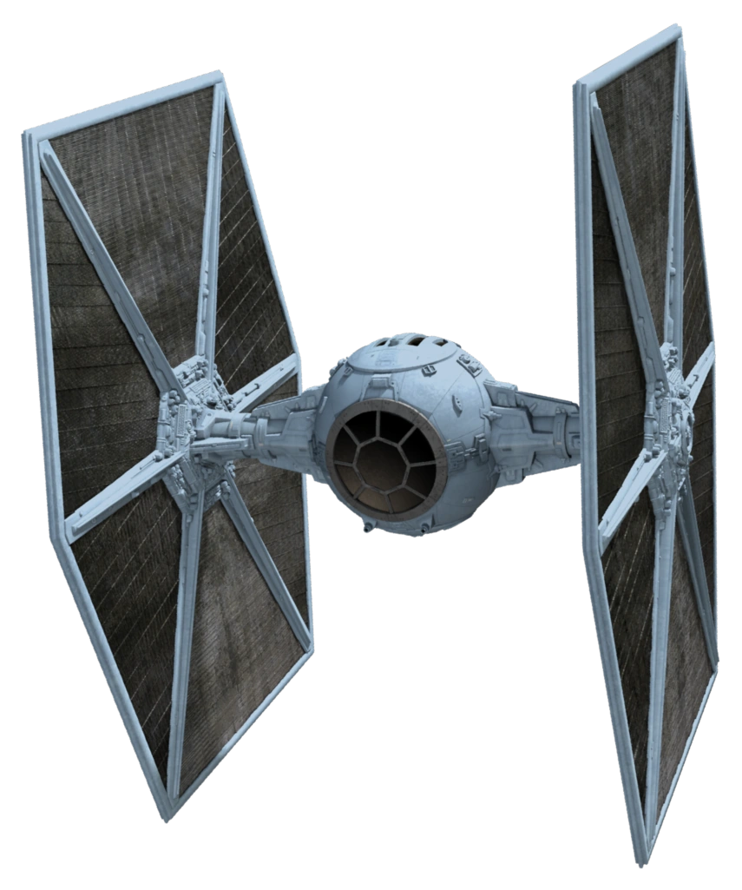

Project 3
The third project is in two parts. It's supposed to initiate us to 3D printing and 3D scanning. We had to draw a 3D model and print it, not using more than 100 grams of matter. Then we had to 3D scan a real life object to generate a 3D model
3D printing
The reason why we also 3D print and don't just use the cutter is because 3D printers create shapes that the cutter can't. If you want more volume, or a sphere, you have to 3D print. So that is what I thought, I wanted something with a sphere. I had the idea for this project after I had started on project 2, so I decided to stay in the same domain, and do something related to planes. The only "plane" I could think of containing a sphere was the TIE fighter from the Star Wars movies. The shape is pretty simple and memorable. Unfortunately, it's impossible to print sounds.
So I went on to draw that shape on Fusion360. After that I downloaded Pluraslicer, and imported my file. My first idea was to start printing by the side, but it would've been wrong since the plates on the side would've needed a lot of support. So it's better to print the ship upright, and include some support below the cockpit. Don't forget to check "Brim".
I uploaded my file on the SD card, slipped it in the printer, selected my file and started printing. Having started printing a little late in the day and the process taking almost 5 hours, I had to come and get my little TIE fighter the next morning. Someone had already taken it off the printer and removed the support. I could just take it and go home with it. Maybe one day when I have time I will paint it to show the glass of the cockpit and the grey things on the wings. Until then I can act like it's a stealth version of the fighter that isn't yet in the movies. Or maybe it's in the background and we can't see it.
3D scanning
To 3D scan I looked up "3D scan" on play store and downloaded Polycam. I found this object at home.
I followed polycam's instruction to scan, used the video mode. I clicked on process and this is how the model looks, ready to be exported to any AutoCAD software.
Here are the files.